OCC: Orbital-Optimized Coupled-Cluster and Møller–Plesset Perturbation Theories¶
Code author: Ugur Bozkaya
Section author: Ugur Bozkaya
Module: Keywords, PSI Variables, OCC
Module: Keywords, PSI Variables, DFOCC
Introduction¶
Orbital-optimized methods have several advantages over their non-optimized counterparts. Once the orbitals are optimized, the wave function will obey the Hellmann-Feynman theorem for orbital rotation parameters. Therefore, there is no need for orbital response terms in the evaluation of analytic gradients. In other words, it is unnecessary to solve the first order coupled-perturbed CC and many-body perturbation theory (MBPT) equations. Further, computation of one-electron properties is easier because there are no response contributions to the particle density matrices (PDMs). Moreover, active space approximations can be readily incorporated into the CC methods [Krylov:2000:vod]. Additionally, orbital-optimized coupled-cluster avoids spurious second-order poles in its response function, and its transition dipole moments are gauge invariant [Pedersen:1999:od].
Another advantage is that the orbital-optimized methods do not suffer from artifactual symmetry-breaking instabilities [Crawford:1997:instability], [Sherrill:1998:od], [Bozkaya:2011:omp2], and [Bozkaya:2011:omp3]. Furthermore, Kurlancheek and Head-Gordon [Kurlancek:2009] demonstrated that first order properties such as forces or dipole moments are discontinuous along nuclear coordinates when such a symmetry breaking occurs. They also observed that although the energy appears well behaved, the MP2 method can have natural occupation numbers greater than 2 or less than 0, hence may violate the N-representability condition. They further discussed that the orbital response equations generally have a singularity problem at the unrestriction point where spin-restricted orbitals become unstable to unrestriction. This singularity yields to extremely large or small eigenvalues of the one-particle density matrix (OPDM). These abnormal eigenvalues may lead to unphysical molecular properties such as vibrational frequencies. However, orbital optimized MP2 (hence Orbital optimized MP3) will solve this N-representability problem by disregarding orbital response contribution of one-partical density matrix.
Although the performance of coupled-cluster singles and doubles (CCSD) and orbital-optimized CCD (OD) is similar, the situation is different in the case of triples corrections, especially at stretched geometries [Bozkaya:2012:odtl]. Bozkaya and Schaefer demonstrated that orbital-optimized coupled cluster based triple corrections, especially those of asymmetrics, provide significantly better potential energy curves than CCSD based triples corrections.
A lot of the functionality in OCC has been enabled with Density Fitting (DF) and Cholesky Decomposition (CD) techniques, which can greatly speed up calculations and reduce memory requirements for typically negligible losses in accuracy.
NOTE: As will be discussed later, all methods with orbital-optimization functionality have non-orbital optimized counterparts. Consequently, there arise two possible ways to call density-fitted MP2. In most cases, users should prefer the DF-MP2 code described in the DF-MP2 section because it is faster. If gradients are needed (like in a geometry optimization), then the procedures outlined hereafter should be followed.
Thus, there arise a few categories of method, each with corresponding input keywords:
- Orbital-optimized MP and CC methods with conventional integrals (OMP Methods OCC keywords)
- Orbital-optimized MP and CC methods with DF and CD integrals (OMP Methods DFOCC keywords)
- Non-orbital-optimized MP and CC methods with conventional integrals (MP/CC Methods OCC keywords)
- Non-orbital-optimized MP and CC methods with DF and CD integrals (MP/CC Methods DFOCC keywords)
Theory¶
What follows is a very basic description of orbital-optimized Møller–Plesset perturbation theory as implemented in Psi4. We will follow our previous presentations ([Bozkaya:2011:omp2], [Bozkaya:2011:omp3], and [Bozkaya:2012:odtl])
The orbital variations may be expressed by means of an exponential unitary operator
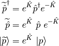
where 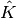 is the orbital rotation operator
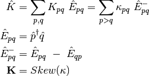
The effect of the orbital rotations on the MO coefficients can be written as
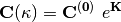
where  is the initial MO coefficient matrix and 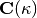 is the new
MO coefficient matrix as a function of .
Now, let us define a variational energy functional (Lagrangian) as a function of
is the initial MO coefficient matrix and 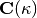 is the new
MO coefficient matrix as a function of .
Now, let us define a variational energy functional (Lagrangian) as a function of
- OMP2
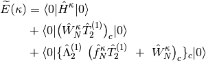
- OMP3
![\widetilde{E}({\bf \kappa}) &= \langle 0| \hat{H}^{\kappa} | 0 \rangle \\
&+ \langle 0| \big(\hat{W}_{N}^{\kappa}\hat{T}_{2}^{(1)}\big)_{c} | 0 \rangle
\ + \ \langle 0| \big(\hat{W}_{N}^{\kappa}\hat{T}_{2}^{(2)}\big)_{c} | 0 \rangle \\
&+ \langle 0| \{\hat{\Lambda}_{2}^{(1)} \ \big(\hat{f}_{N}^{\kappa} \hat{T}_{2}^{(1)}
\ + \ \hat{W}_{N}^{\kappa} \big)_{c}\}_{c} | 0 \rangle \\
&+ \langle 0| \{\hat{\Lambda}_{2}^{(1)} \ \big(\hat{f}_{N}^{\kappa} \hat{T}_{2}^{(2)}
\ + \ \hat{W}_{N}^{\kappa}\hat{T}_{2}^{(1)} \big)_{c}\}_{c} | 0 \rangle \\
&+ \langle 0| \{\hat{\Lambda}_{2}^{(2)} \ \big(\hat{f}_{N}^{\kappa} \hat{T}_{2}^{(1)}
\ + \ \hat{W}_{N}^{\kappa} \big)_{c}\}_{c} | 0 \rangle](_images/math/2b8940684af2769bed0d0bcc38e671210318fcfd.png)
- OLCCD
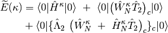
where subscript c means only connected diagrams are allowed, and
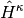,  , and 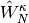 defined as
, and 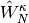 defined as
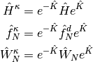
where 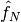, and  are the one- and two-electron components of normal-ordered Hamiltonian. Then,
first and second derivatives of the energy with respect to the parameter at
are the one- and two-electron components of normal-ordered Hamiltonian. Then,
first and second derivatives of the energy with respect to the parameter at
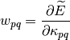

Then the energy can be expanded up to second-order as follows
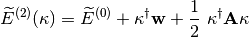
where is the MO gradient vector, is the MO rotation vector,
and  is the MO Hessian matrix. Therefore, minimizing the energy with respect to
yields
is the MO Hessian matrix. Therefore, minimizing the energy with respect to
yields
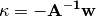
This final equation corresponds to the usual Newton-Raphson step.
Publications resulting from the use of the orbital-optimized code should cite the following publications:
- OMP2 [Bozkaya:2011:omp2] and [Bozkaya:2013:omp2grad]
- OMP3 [Bozkaya:2011:omp3] , [Bozkaya:2013:omp3], and [Bozkaya:2013:omp3grad]
- OMP2.5 [Bozkaya:2011:omp3]
- OLCCD [Bozkaya:2013:ocepa]
- LCCD [Bozkaya:2013:ocepa]
Convergence Problems¶
For problematic open-shell systems, we recommend to use the ROHF or DFT orbitals as an initial guess for orbital-optimized methods. Both ROHF and DFT orbitals may provide better initial guesses than UHF orbitals, hence convergence may be significantly speeded up with ROHF or DFT orbitals. In order to use ROHF orbitals we can simply use “reference rohf” option. For DFT orbitals one should use “reference uks” and “dft_functional b3lyp” options. Of course users can use any DFT functional available in Psi4.
Methods¶
The orbital-optimized MPn and OLCCD methods currently supported in
Psi4 are outlined in Table Orbital-Optimzed OCC/DFOCC
Methods. The following methods are available
and can be controlled through OCC (conventional integrals CONV)
and DFOCC (density-fitted DF and Cholesky-decomposed CD)
keywords. Switching between the integrals treatments is controlled
through ‘type select’ values; see rightmost Table column.
| name | calls method | Energy | Gradient | type select |
|---|---|---|---|---|
| omp2 | Orbital-Optimized MP2 | RHF/UHF/ROHF/RKS/UKS | RHF/UHF/ROHF/RKS/UKS | MP2_TYPE CONV |
| Density-Fitted Orbital-Optimized MP2 | RHF/UHF/ROHF/RKS/UKS | RHF/UHF/ROHF/RKS/UKS | MP2_TYPE DF | |
| Cholesky-Decomposed Orbital-Optimized MP2 | RHF/UHF/ROHF/RKS/UKS | — | MP2_TYPE CD | |
| omp3 | Orbital-Optimized MP3 | RHF/UHF/ROHF/RKS/UKS | RHF/UHF/ROHF/RKS/UKS | MP_TYPE CONV |
| Density-Fitted Orbital-Optimized MP3 | RHF/UHF/ROHF/RKS/UKS | RHF/UHF/ROHF/RKS/UKS | MP_TYPE DF | |
| Cholesky-Decomposed Orbital-Optimized MP3 | RHF/UHF/ROHF/RKS/UKS | — | MP_TYPE CD | |
| omp2.5 | Orbital-Optimized MP2.5 | RHF/UHF/ROHF/RKS/UKS | RHF/UHF/ROHF/RKS/UKS | MP_TYPE CONV |
| Density-Fitted Orbital-Optimized MP2.5 | RHF/UHF/ROHF/RKS/UKS | RHF/UHF/ROHF/RKS/UKS | MP_TYPE DF | |
| Cholesky-Decomposed Orbital-Optimized MP2.5 | RHF/UHF/ROHF/RKS/UKS | — | MP_TYPE CD | |
| olccd | Orbital-Optimized Linear CCD | RHF/UHF/ROHF/RKS/UKS | RHF/UHF/ROHF/RKS/UKS | CC_TYPE CONV |
| Density-Fitted Orbital-Optimized LCCD | RHF/UHF/ROHF/RKS/UKS | RHF/UHF/ROHF/RKS/UKS | CC_TYPE DF | |
| Cholesky-Decomposed Orbital-Optimized LCCD | RHF/UHF/ROHF/RKS/UKS | — | CC_TYPE CD |
| name | calls method | Energy | Gradient |
|---|---|---|---|
| scs-omp3 | Spin-Component Scaled Orbital-Optimized MP3 | RHF/UHF/ROHF/RKS/UKS | — |
| sos-omp3 | Spin-Opposite Scaled Orbital-Optimized MP3 | RHF/UHF/ROHF/RKS/UKS | — |
| scs(n)-omp3 | A special version of SCS-OMP3 for nucleobase interactions | RHF/UHF/ROHF/RKS/UKS | — |
| scs-omp3-vdw | A special version of SCS-OMP3 (from ethene dimers) | RHF/UHF/ROHF/RKS/UKS | — |
| sos-pi-omp3 | A special version of SOS-OMP3 for 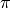-systems | RHF/UHF/ROHF/RKS/UKS | — |
| scs-omp2 | Spin-Component Scaled Orbital-Optimized MP2 | RHF/UHF/ROHF/RKS/UKS | — |
| sos-omp2 | Spin-Opposite Scaled Orbital-Optimized MP2 | RHF/UHF/ROHF/RKS/UKS | — |
| scs(n)-omp2 | A special version of SCS-OMP2 for nucleobase interactions | RHF/UHF/ROHF/RKS/UKS | — |
| scs-omp2-vdw | A special version of SCS-OMP2 (from ethene dimers) | RHF/UHF/ROHF/RKS/UKS | — |
| sos-pi-omp2 | A special version of SOS-OMP2 for -systems | RHF/UHF/ROHF/RKS/UKS | — |
Basic OCC Keywords¶
E_CONVERGENCE¶
Convergence criterion for energy. See Table Post-SCF Convergence for default convergence criteria for different calculation types.
- Type: conv double
- Default: 1e-6
R_CONVERGENCE¶
Convergence criterion for amplitudes (residuals).
- Type: conv double
- Default: 1e-5
RMS_MOGRAD_CONVERGENCE¶
Convergence criterion for RMS orbital gradient. Default adjusts depending on E_CONVERGENCE
- Type: conv double
- Default: 1e-6
MAX_MOGRAD_CONVERGENCE¶
Convergence criterion for maximum orbital gradient
- Type: conv double
- Default: 1e-3
MO_MAXITER¶
Maximum number of iterations to determine the orbitals
- Type: integer
- Default: 50
Advanced OCC Keywords¶
OPT_METHOD¶
The optimization algorithm. Modified Steepest-Descent (MSD) takes a Newton-Raphson (NR) step with a crude approximation to diagonal elements of the MO Hessian. The ORB_RESP option obtains the orbital rotation parameters by solving the orbital-reponse (coupled-perturbed CC) equations. Additionally, for both methods a DIIS extrapolation will be performed with the DO_DIIS = TRUE option.
- Type: string
- Possible Values: MSD, ORB_RESP
- Default: ORB_RESP
MO_DIIS_NUM_VECS¶
Number of vectors used in orbital DIIS
- Type: integer
- Default: 6
LINEQ_SOLVER¶
The solver will be used for simultaneous linear equations.
- Type: string
- Possible Values: CDGESV, FLIN, POPLE
- Default: CDGESV
ORTH_TYPE¶
The algorithm for orthogonalization of MOs
- Type: string
- Possible Values: GS, MGS
- Default: MGS
MP2_OS_SCALE¶
MP2 opposite-spin scaling value
- Type: double
- Default: 6.0/5.0
MP2_SS_SCALE¶
MP2 same-spin scaling value
- Type: double
- Default: 1.0/3.0
MP2_SOS_SCALE¶
MP2 Spin-opposite scaling (SOS) value
- Type: double
- Default: 1.3
MP2_SOS_SCALE2¶
Spin-opposite scaling (SOS) value for optimized-MP2 orbitals
- Type: double
- Default: 1.2
OCC_ORBS_PRINT¶
Do print OCC orbital energies?
- Type: boolean
- Default: false
TPDM_ABCD_TYPE¶
How to take care of the TPDM VVVV-block. The COMPUTE option means it will be computed via an IC/OOC algoritm. The DIRECT option (default) means it will not be computed and stored, instead its contribution will be directly added to Generalized-Fock Matrix.
- Type: string
- Possible Values: DIRECT, COMPUTE
- Default: DIRECT
DO_LEVEL_SHIFT¶
Do apply level shifting?
- Type: boolean
- Default: true
Basic DFOCC Keywords¶
E_CONVERGENCE¶
Convergence criterion for energy. See Table Post-SCF Convergence for default convergence criteria for different calculation types.
- Type: conv double
- Default: 1e-6
R_CONVERGENCE¶
Convergence criterion for amplitudes (residuals).
- Type: conv double
- Default: 1e-5
RMS_MOGRAD_CONVERGENCE¶
Convergence criterion for RMS orbital gradient. Default adjusts depending on E_CONVERGENCE
- Type: conv double
- Default: 1e-6
MAX_MOGRAD_CONVERGENCE¶
Convergence criterion for maximum orbital gradient
- Type: conv double
- Default: 1e-3
MO_MAXITER¶
Maximum number of iterations to determine the orbitals
- Type: integer
- Default: 50
Advanced DFOCC Keywords¶
OPT_METHOD¶
The orbital optimization algorithm. Presently Quasy Newton-Raphson algorithm avaliable with several Hessian options.
- Type: string
- Possible Values: QNR
- Default: QNR
HESS_TYPE¶
Type of the MO Hessian matrix
- Type: string
- Possible Values: APPROX_DIAG, APPROX_DIAG_EKT, APPROX_DIAG_HF, HF
- Default: HF
MO_DIIS_NUM_VECS¶
Number of vectors used in orbital DIIS
- Type: integer
- Default: 6
ORTH_TYPE¶
The algorithm for orthogonalization of MOs
- Type: string
- Possible Values: GS, MGS
- Default: MGS
DO_LEVEL_SHIFT¶
Do apply level shifting?
- Type: boolean
- Default: true
Conventional (Non-OO) Coupled-Cluster and Møller–Plesset Perturbation Theories¶
Non-orbital-optimized counterparts to higher order MPn methods are also
available. The following methods are available and can be controlled
through OCC (conventional integrals CONV) and DFOCC (density-fitted
DF and Cholesky-decomposed CD) keywords. Switching between
the integrals treatments is controlled through ‘type select’ values;
see rightmost column in Table Conventional OCC/DFOCC Methods.
Depending on efficiency considerations, the OCC & DFOCC modules may
or may not be the default in Psi4 for available methods. (See
Cross-module Redundancies for gory
details.) To call the OCC/DFOCC implementation of any method below in
preference to the default module, issue set qc_module occ.
| name | calls method | Energy | Gradient | type select |
|---|---|---|---|---|
| mp2 | MP2 | RHF/UHF/ROHF | RHF/UHF | MP2_TYPE CONV |
| Density-Fitted MP2 | RHF/UHF/ROHF | RHF/UHF | MP2_TYPE DF | |
| Cholesky-Decomposed MP2 | RHF/UHF/ROHF | — | MP2_TYPE CD | |
| mp3 | MP3 | RHF/UHF | RHF/UHF | MP_TYPE CONV |
| Density-Fitted MP3 | RHF/UHF | RHF/UHF | MP_TYPE DF | |
| Cholesky-Decomposed MP3 | RHF/UHF | — | MP_TYPE CD | |
| mp2.5 | MP2.5 | RHF/UHF | RHF/UHF | MP_TYPE CONV |
| Density-Fitted MP2.5 | RHF/UHF | RHF/UHF | MP_TYPE DF | |
| Cholesky-Decomposed MP2.5 | RHF/UHF | — | MP_TYPE CD | |
| lccd | Linearized CCD | RHF/UHF | RHF/UHF | CC_TYPE CONV |
| Density-Fitted LCCD | RHF/UHF | RHF/UHF | CC_TYPE DF | |
| Cholesky-Decomposed LCCD | RHF/UHF | — | CC_TYPE CD | |
| ccd | CCD | — | — | CC_TYPE CONV |
| Density-Fitted CCD | RHF | RHF | CC_TYPE DF | |
| Cholesky-Decomposed CCD | RHF | — | CC_TYPE CD | |
| ccsd | CCSD | — | — | CC_TYPE CONV |
| Density-Fitted CCSD | RHF | RHF | CC_TYPE DF | |
| Cholesky-Decomposed CCSD | RHF | — | CC_TYPE CD | |
| ccsd(t) | CCSD(T) | — | — | CC_TYPE CONV |
| Density-Fitted CCSD(T) | RHF | — | CC_TYPE DF | |
| Cholesky-Decomposed CCSD(T) | RHF | — | CC_TYPE CD | |
| ccsd(at) | Lambda-CCSD(T) | — | — | CC_TYPE CONV |
| Density-Fitted Lambda-CCSD(T) | RHF | — | CC_TYPE DF | |
| Cholesky-Decomposed Lambda-CCSD(T) | RHF | — | CC_TYPE CD |